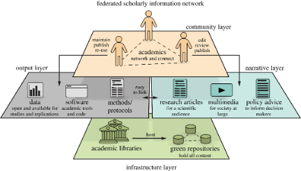

Scholarly Communication

The current academic publishing system — dominated by a small number of commercial publishers — is costly, restrictive, and misaligned with the interests of science and society. This research line develops theoretical models and practical tools to support a transition toward scholar-governed, open-access publishing.
A long engagement with scholarly communication and research evaluation led to the founding of Open Scholar, an international organisation of researchers committed to developing and promoting alternatives to today’s problematic model of academic publishing. Our work spans peer review reform, overlay journals, institutional repositories, and the broader political economy of open access.
Journal Articles
-
Brembs, B., Huneman, P., Schönbrodt, F., Nilsonne, G., Susi, T., Siems, R., Perakakis, P., Trachana, V., Ma, L., & Rodriguez-Cuadrado, S. (2023). Replacing academic journals. Royal Society Open Science, 10(7), 230206. doi: 10.1098/rsos.230206
A blueprint for replacing traditional journals with a modular, scholar-governed infrastructure built on institutional repositories and open peer review.
-
Bernal, I., & Perakakis, P. (2023). No-pay publishing: use institutional repositories. Nature, 619(7971), 698. doi: 10.1038/d41586-023-02315-z
A correspondence arguing that institutional repositories already provide the infrastructure for free, immediate open-access dissemination without APCs.
-
Mosquera-de-Arancibia, C., & Lorenzo, E. (2017). OPRM: Challenges to including open peer review in open access repositories. Code4Lib, 35.
Examines the technical and social challenges of integrating transparent peer review workflows into existing open-access repository platforms.
-
Taylor, M., Perakakis, P., Trachana, V., & Gialis, S. (2014). Rankings are the sorcerer's new apprentice. Ethics in Science and Environmental Politics, 13(2), 73–99. doi: 10.3354/esep00137
A critical analysis of university ranking systems, arguing that they function more as tools of power than as meaningful measures of academic quality.
-
Perakakis, P., & Taylor, M. (2013). Academic self-publishing: a not-so-distant future. Prometheus, 31(3), 257–263. doi: 10.1080/08109028.2014.891712
Explores a near-future scenario in which scholars bypass traditional publishers altogether using open repositories and community-driven peer review.
-
Perakakis, P., Taylor, M., Mazza, G. M., & Trachana, V. (2011). Understanding the role of open peer review and dynamic academic articles. Scientometrics, 88(2), 669–673. doi: 10.1007/s11192-011-0402-1
Introduces the concept of dynamic academic articles that evolve through open post-publication peer review, replacing static PDF-based publishing.
-
Perakakis, P., Taylor, M., Mazza, M., & Trachana, V. (2010). Natural selection of academic papers. Scientometrics, 85(2), 553–559. doi: 10.1007/s11192-010-0253-1
Proposes an evolutionary model of scientific publishing in which open post-publication review acts as a selection mechanism for scholarly work.
-
Perakakis, P., Taylor, M., & Trachana, V. (2010). The roads to open access. World Social Science Report 2010, UNESCO Publishing, Paris.
An overview of open-access publishing models and their prospects, contributed to the UNESCO World Social Science Report.
-
Taylor, M., Perakakis, P., & Trachana, V. (2007). The siege of science. Ethics in Science and Environmental Politics, 8(1), 17–40. doi: 10.3354/esep00086
A foundational critique of the commercial takeover of academic publishing and its effects on the free circulation of scientific knowledge.
-
Perakakis, P., Taylor, M., Buela-Casal, G., & Checa, P. (2005). A neuro-fuzzy system to calculate a journal internationality index. CEDI Proceedings, Granada, Spain.
Introduces a fuzzy-logic approach to quantifying the international reach of academic journals based on multiple bibliometric indicators.
Invited Talks
-
Perakakis, P. (2025). Reforma de la evaluación impulsada por CoARA en la UCM. International Open Access Week 2025, UCM Library, Madrid, Spain.
Invited talk on CoARA-driven research evaluation reform.
-
Perakakis, P. (2025). El negocio de las editoriales académicas y modelos alternativos. Jornadas de Cultura Laboral en Investigación (DigniMad), Madrid, Spain.
Invited lecture on the business model of academic publishers and non-commercial alternatives.
-
Perakakis, P. (2024). Ética e integridad en la Investigación Científica. PhD Courses, Complutense University of Madrid, Madrid, Spain.
PhD course on ethics and integrity in scientific research. May 22–23, 2024 and March 7 & 14, 2024.
-
Perakakis, P. (2024). Guía del autoestopista hacia la libertad académica. Open Science Course, SEPNECA/SEPEX/SEPSICOBIO/UAM, Madrid, Spain.
Invited talk on navigating academic freedom in the context of open science.
-
Perakakis, P. (2024). Prácticas para una ciencia más abierta, ética y reproducible. PhD Course 2024–2025, University of Malaga, Malaga, Spain.
PhD course on open, ethical and reproducible science practices.
-
Perakakis, P. (2023). Innovación en prácticas de revisión por pares. International Open Access Week, REBIUN, Spain.
Invited talk on innovations in peer review practices for open access publishing.
-
Perakakis, P. (2023). Innovación en prácticas de revisión por pares. Conference on the Foundations for the Advancement of Open Science, CSIC, Cuenca, Spain.
Invited talk on innovations in peer review at the CSIC open science conference.
-
Perakakis, P. (2023). Open Science with public infrastructure. Eötvös Loránd University, Budapest, Hungary.
Talk arguing for publicly-owned, scholar-governed infrastructure as the foundation for open science.
-
Perakakis, P. (2023). Introducción a la Ciencia Abierta: Transformando la Investigación para un Futuro Sostenible. PhD Course 2023–2024, University of Jaen, Jaen, Spain.
PhD course introducing open science and its role in building a more sustainable research ecosystem.
-
Perakakis, P. (2023). DeMéritos de la investigación científica. Jornada Inter-CRECS 2023, Madrid, Spain.
Invited round-table discussion on perverse incentives in scientific research evaluation.
-
Perakakis, P. (2023). Ciencia abierta: contexto histórico y cambios actuales en la validación, evaluación y comunicación de la producción científica. PhD Course 2023–2024, University of Malaga, Malaga, Spain.
PhD course covering the historical context and current changes in scholarly validation, evaluation, and communication.
-
Perakakis, P. (2022). Ciencia abierta y su implicación en la evaluación de la investigación. 44th Annual Congress of the Sociedad Española de Bioquímica y Biología Molecular, Malaga, Spain.
Round-table on open science and its implications for research evaluation.
-
Perakakis, P. (2022). Open Science: El papel de las revistas académicas. Colegio Oficial de Psicólogos, Madrid, Spain.
Invited conference on the role of academic journals in open science.
-
Perakakis, P. (2021). The Hitchhiker's Guide to Academic Publishing. New York University (NYU), Psychology Department, Online.
Invited talk surveying the history, problems, and alternatives to commercial academic publishing.
-
Perakakis, P. (2021). Science Collaboration and Open Science. 1st Crowdfight Symposium on the Science of Collaboration, Online.
Roundtable panelist on the role of open science in fostering scientific collaboration.
-
Perakakis, P. (2021). ¿Hay vida más allá de las editoriales? La revista Psicológica y la nueva generación de comunicación científica. Annual Conference of the Sociedad Española de Psicología Experimental (SEPEX), Online.
Keynote address on the future of scholar-owned journals and the next generation of scholarly communication.
-
Perakakis, P. (2019). La crisis de replicabilidad en Psicología: problemática y propuestas. Programa de doctorado en Psicología: Ciencia abierta, replicabilidad y evidencia científica, University of Seville, Sevilla, Spain.
PhD course lecture on the replicability crisis in psychology and proposed solutions.
-
Perakakis, P. (2017). Open Science: What, Why, How?. Hot Topic Lecture, Ghent University, Ghent, Belgium.
Hot Topic Lecture introducing open science principles, motivations, and practical tools.
-
Perakakis, P. (2017). Open Science in an Open World. 2nd Homo Scientificus Europaeus Meeting, Barcelona, Spain.
Invited talk on the relationship between open science and wider societal openness.
-
Perakakis, P. (2017). Why True Science is only Open Science. EURODOC2017, Oslo, Norway.
Presentation arguing that openness is a precondition for genuine scientific practice.
-
Perakakis, P. (2016). "One damned thing after another": The journal monopoly, how it came to be, what it means for science and what we can do about it. GATE CNRS, Lyon, France.
Invited lecture tracing the history of the commercial journal monopoly and paths toward reform.
-
Perakakis, P. (2016). An Open Peer Review Module for Open Access Repositories. Open Repositories 2016, Dublin, Ireland.
Presentation of the OPRM — a software module integrating structured open peer review into open-access repositories.
-
Perakakis, P. (2016). Open Peer Review workshop. Goettingen University, Goettingen, Germany.
Workshop on open peer review models, their benefits and limitations.
-
Perakakis, P. (2016). Presenting the first Open Peer Review Module for Open Access Repositories. CSIC, Madrid, Spain.
Presentation of the OPRM software at CSIC, the first open peer review module designed for integration with open-access repositories.
-
Perakakis, P. (2016). Next generation repositories. COAR Annual Meeting, Vienna, Austria.
Presentation on the vision for next-generation open-access repositories.
-
Perakakis, P. (2015). Modelos alternativos de validación y evaluación de la producción académica. Seminario sobre visibilidad y divulgación de la producción científica, University of Granada, Granada, Spain.
Invited seminar on alternative models for the validation and evaluation of academic production.
-
Perakakis, P. (2014). New systems for scientific evaluation, peer-review and open access. CSIC Open Access Week, Madrid, Spain.
Invited workshop presenting emerging alternative systems for scholarly evaluation and open-access dissemination.
-
Perakakis, P. (2013). Beyond Open Access: facing the real problems. Ludwig Maximilian University, Munich, Germany.
Invited lecture arguing that open access alone is insufficient and addressing the deeper structural problems of academic publishing.
-
Perakakis, P. (2013). Open, Portable, Decoupled – How should Peer Review change?. SpotOn London 2013, London, UK.
Presentation advocating for peer review decoupled from journals and portable across platforms.
-
Perakakis, P. (2013). Open Access to Scientific Reviews: Quantifying the opinion of peers. EUI Roundtable on Open Access Publishing, European University Institute, Florence, Italy.
Talk at the EUI Open Access Week roundtable on making peer review outputs openly accessible and quantifiable.
-
Perakakis, P. (2013). Current academic publishing and the LIBRE alternative. CERN Workshop on Innovations in Scholarly Communication (OAI8), University of Geneva, Geneva, Switzerland.
Presentation introducing the LIBRE platform as an alternative to the current academic publishing model.
-
Perakakis, P. (2007). How the impact factor power law came to be and the new alternatives. European Association of Science Editors (EASE), Barcelona, Spain.
Talk on the history of the impact factor and emerging bibliometric alternatives.
-
Perakakis, P. (2006). Putting the impact factor in its place with a new approach in bibliometry. Mediterranean Editors & Translators (METM), Barcelona, Spain.
Presentation proposing a new bibliometric approach to contextualise and replace the impact factor.